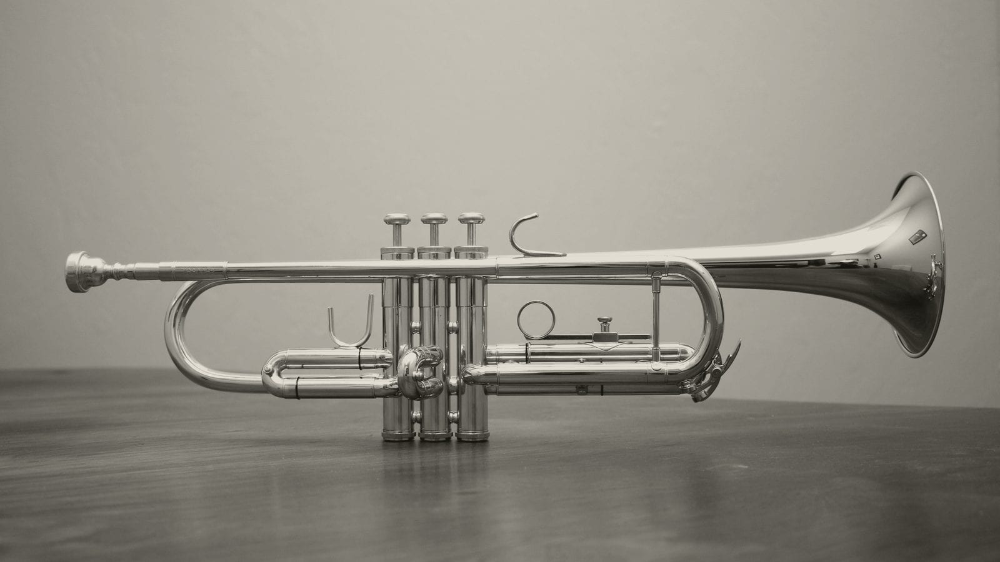

Getting married in The Springs
Live music for a Colorado Springs wedding.
You’ve found your venue in The Springs, the view is everything you hoped for, and now it’s time to think about the music. Many couples want music for three parts of the day, and we’d suggest a guitarist for the ceremony, a duo for cocktail hour and a band or DJ for the dancing.
We can play one part of your wedding or all of it, and one person on our team will be your point of contact through the whole day.
Trusted and booked by
The look
Spanish guitar and jazz standards at a Colorado Springs wedding.


Wedding day music
What music works best for each part of the day?
Many Colorado Springs weddings start outdoors and move inside after dark, so we’ll plan the music to move with your guests.
- The ceremony
- We’d suggest one guitarist near the aisle, on acoustic or Spanish guitar. Both sound lovely outdoors, the guitarist can keep playing for as long as the walk down the aisle takes, and a small sound system can help everyone hear your officiant. Learn more about our Spanish guitarist.
- The cocktail hour
- An acoustic duo or a jazz duo is a great fit, with voice and guitar or guitar and upright bass, and it’s soft enough for everyone to keep chatting. The Springs has plenty of lovely terraces, so cocktail hour is a great time to stay outside.
- The dancing
- Tejas Singh and his band can play through dinner and then get people dancing. A DJ can also play from the end of dinner to the last song, and you can book a band first and a DJ after it to keep the party going.
Resorts, hotels & ranches
Live music at Colorado Springs wedding venues
At Garden of the Gods Resort and Club and Cheyenne Mountain Resort, the ceremony is usually outdoors with the view behind you and the reception is indoors, which is an easy setup for live music. The Broadmoor is in a class of its own, and we’ll work out the details of your wedding with their events office.
Downtown, The Mining Exchange and The Antlers are great choices for a hotel wedding. Your ceremony and reception can be under one roof, your guests can walk instead of drive, and the dancing can go as late as the downtown noise curfew allows. A duo fits nicely in a hotel’s smaller event spaces, and a band or DJ may need the ballroom.
We can also come to Manitou Springs, Monument and the ranches out toward Larkspur. At a barn or garden site, we’ll want to find a covered spot for the musicians ahead of time.
The light and the wind
Planning an outdoor ceremony in Colorado Springs
The sun drops behind the Front Range early and the color on the rocks goes with it, so if you’re timing your ceremony to that light, we’ll plan the music around your start time. The wind can come off the range in the afternoon and settle down around sunset. That’s why we keep a guitarist’s sound system small and low to the ground, and we’ll pick the ceremony spot with your venue for shelter as well as the view.
Not sure what to plan first? Here’s how far ahead to book wedding musicians in Colorado. Planning a welcome party or Sunday brunch around your wedding? Check out our live music for private parties in Colorado Springs. Getting married in Denver instead? Learn more about cocktail hour music in Denver. We also wrote about what Colorado Springs sounds like.
What clients say
“They are full of so much energy and are like having a full on concert at your event. We always told people that we weren't having a "wedding band", we were having a band at our wedding. … Our guests danced their tails off and had the best time. Everything we wanted and then some.”
Questions
Colorado Springs wedding music questions
Your venue’s events office can find stage sizes and power needs in our technical guide.
Do you play weddings in Colorado Springs?
Can a guitarist play an outdoor ceremony in Colorado Springs?
Is a duo enough for a Colorado Springs cocktail hour?
What does setup look like, and does the altitude matter?
How far ahead should we book wedding musicians in Colorado Springs?
Send us the date, the ceremony site and the guest count, and we'll take it from there.
We’d love to be part of your wedding in The Springs.